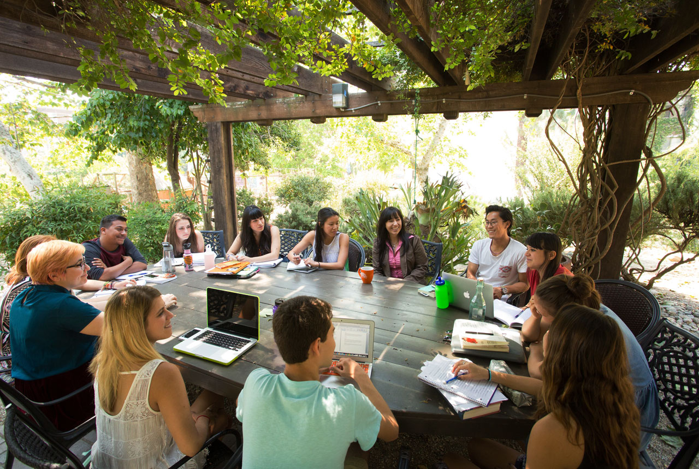

The impact OmniDELTM learning experience is sealed by its versatility. Any space equipped with a basic infrastructure can be transformed into an OmniDELTM Learning Space. With studios, cafes, living rooms, multiplexes and auditoriums, OmniDELTM learning spaces redefines a unique OmniVarsity classroom.